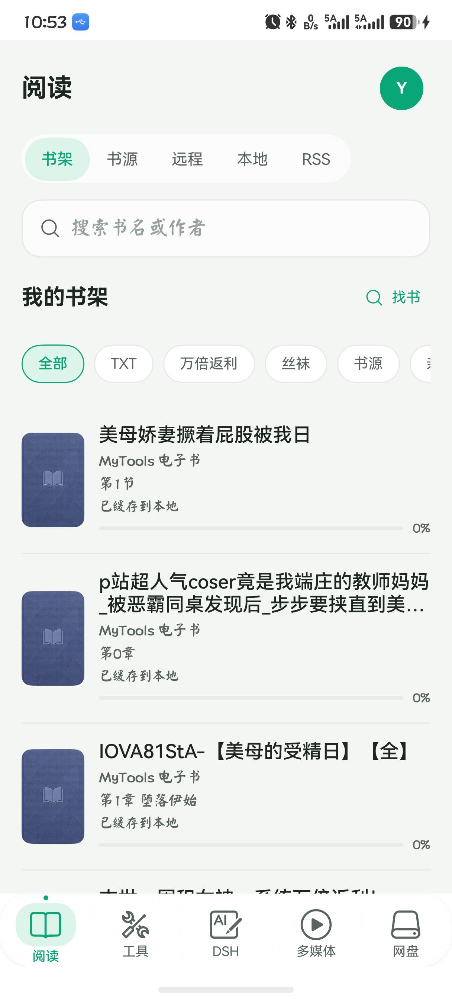
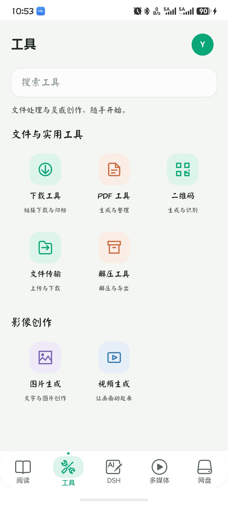
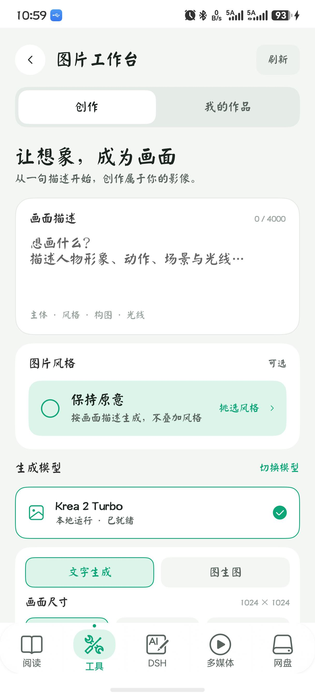
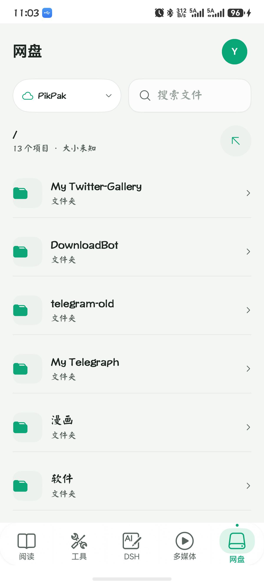

01 / 书架390 × 844
阅读
我的书架
山海之间
示例作者 · 第 28 章
已缓存到本地42%
漫长的旅程
示例作者 · 第 6 章
已缓存到本地18%
城市里的风
示例作者 · 第 1 章
正在缓存 · 64%0%
点封面查看详情，点书名继续阅读。
封面进详情；文字区继续阅读。缓存状态用轻量标记，保留 RSS 同级入口。
沿用青绿识别色，统一按钮、表单、列表与导航。
现有鸿蒙客户端已按规范改造，持续完善页面布局。
2026.11.02 · 鸿蒙客户端 · 示例内容
示例作者 · 第 28 章
已缓存到本地示例作者 · 第 6 章
已缓存到本地示例作者 · 第 1 章
正在缓存 · 64%点封面查看详情，点书名继续阅读。
封面进详情；文字区继续阅读。缓存状态用轻量标记，保留 RSS 同级入口。
处理文件，记录灵感。
稳定的工具分组，统一图标容器与文字基线。避免给每个入口添加操作按钮。
根目录 · 13 个项目
12 项 · 今天更新
24 项 · 昨天更新
8 项 · 10 月 30 日
2.4 MB · PDF 文档
18 KB · 文本文档
保留现有来源选择、目录与打开能力；目录整行可触，来源切换使用文字操作。
主色从明亮装饰色调整为可用于小字号文字与白字按钮的深青绿。
按钮收紧，文字加大。固定字体、真实字重，统一每个页面的操作比例。
按钮视觉更轻，动作文字更容易辨认。
边框和底色收进点击区域内。
随项目分发的固定字体。
中文、英文、数字使用同一套字形体系。
正文 Regular 400
文字操作 Medium 500
主操作 SemiBold 600
一屏一个主要推进动作；其余操作按频率、风险和上下文逐级收敛。
提交、保存、继续阅读。可见 40 高，16 字号 / 600；点击区 44。
可见 36 高，16 字号 / 500；同组主次等高。
16 字号 / 500，左右 8；点击区 44，按下弱底 32。
低频管理。明确影响，最终确认用实色危险按钮。
返回、搜索、更多。44 × 44，必须有可访问名称。
加载不改变按钮宽度；保持清楚的动作文字。焦点环用于键盘与辅助设备导航。
16 / 22，Medium；横向 8，图文间距 6。相邻点击区间至少 8；空间不够收进更多菜单。
分段导航用于切换视图；筛选标签用于缩小结果。选中状态包含文字或结构变化。
请输入文件名后再保存。
错误就近显示；禁用原因不能只靠置灰。
阅读记录会保留。再次打开时需要重新下载。
72个组件，覆盖10个场景族。选择、日期、搜索可直接操作，展开卡片可查看尺寸、状态、交互与使用边界。
推进当前任务的标准按钮，以角色区分主要、次要与危险动作。
工具栏和行内的轻操作，文字可辨认而外形克制。
行内文字操作保持同一基线；危险操作独立着色。
用于返回、搜索、关闭和更多等高频短动作。
44 × 44 点击区，20图标；禁用示例保留可识别图形。
同一流程的主次、确认取消或批量动作组合。
同组等宽、等高、同字重：最小宽96，可见高40，命中高44；颜色区分主次。
在正文或说明中进入明确位置，区别于执行动作。
阅读前请查看 字体与显示说明
禁用链接：下载报告（尚未生成）
在长列表或沉浸内容上提供一个必要的快捷入口。
仅高频全局新增使用；避开底部手势区和已有主按钮。
带持久标签、帮助信息和就近校验的基础字段。
名称将用于本地保存。
用于较长描述、提示词和文本处理输入。
默认隐藏内容，可明确切换显示并提供就近错误。
本地示例密码；显隐切换保持内容与光标。
需要精确数值时使用，单位、范围和精度清楚可见。
整数，范围1–100；超界在字段下说明。
整合输入、清除、搜索触发和范围说明的完整搜索入口。
明确提交当前查询，与搜索框清除动作分离。
完整提交按钮、取消搜索、仅图标入口三个独立变体。
帮助完成查询，区分建议、历史和直接结果。
点击历史词会填入并搜索；没有匹配时保留关键词。
组织相关字段，统一必填、帮助、错误汇总和提交位置。
提供完整验证码输入、发送、倒计时和重试路径。
示例只演示60秒重发倒计时，不发送短信。
从有限选项中选一个值，显示当前值、展开方向和清除规则。
没有匹配的选项
选项较多时在选择层内搜索，同时保持已选值。
没有匹配的选项
在独立选择层中完成多项勾选，明确已选数量与提交方式。
没有匹配的选项
在有关联的层级或维度中逐步选择，清楚展示当前位置。
没有匹配的选项
没有匹配的选项
切换来源先确认清除下级目录；取消保留原路径。
少量互斥选项直接展示，便于比较含义。
用于独立选项、协议确认或批量选择。
对一个可立即理解的布尔状态进行切换。
用紧凑标签快速缩小结果，区别于执行按钮和静态状态。
已选筛选会保留文字与边框；选项为空时不给伪选中状态。
用固定格式展示一个日历日期，并提供明确日期选择入口。
日期格 44 × 44；窄卡片可横向滚动。
默认格式YYYY-MM-DD；失效日期不可选。
显示月份、星期、今天与可选日期，提供清楚的确认路径。
日期格 44 × 44；窄卡片可横向滚动。
已提交：2026-11-12；草稿：2026-11-12
2026-11-01为禁用示例；切月不提交，确认后更新值。
选择开始与结束日期，说明是否包含首尾日期。
日期格 44 × 44；窄卡片可横向滚动。
先选开始，再选结束；再次点击可重新选择。
选择时分或秒，明确24小时制、步长及可用范围。
选择时间 · 24小时制
已提交09:00；草稿09:00
可滚动的小时和分钟列；步长5分钟；当前值保持选中。
组合日期、时刻和时区，使预定时间含义明确。
日期格 44 × 44；窄卡片可横向滚动。
已提交09:30；草稿09:30
没有匹配的选项
切换时区保留钟面时间，提交值明确携带所选偏移。
2026-11-12 09:30 · UTC+08:00
将常用相对时间映射成可检查的具体日期。
按所选时区计算完整自然日，不用固定毫秒数跨越日期边界。
调整连续或离散数值，同时提供精确读数和输入路径。
触摸轨道44高；支持方向键和离散步长。
在同一连续维度中选择下限与上限。
双滑块各有独立名称；起点不允许越过终点。
适用于少量离散数值，结合减、当前值和加。
步长1；12–32，到边界禁用对应按钮。
显示或输入离散评分，区分只读评分与可编辑评分。
体验评价
用预设色与精确色值配置主题，选择过程不丢失原值。
阅读背景
说明当前页面与上一级，并容纳少量明确操作。
在同一上下文中切换内容页面，保持选项稳定。
显示下划线指示；切换标签不丢失草稿。
对同级、短名称、少量视图提供紧凑切换。
同级内容切换；RSS与其他来源同级。
保持五个一级入口可识别，并与沉浸页控制区分。
五个一级入口；选中包含文字和形态变化。
显示目录或层级路径并支持回到可访问的上级。
过长路径保留首级和当前级，中间层级收纳。
结果有明确页数时切换页码，保留总量与边界语义。
加载新页时保留当前位置；第一页禁用上一页。
显示多步任务的当前位置、完成与错误状态。
集中低频或上下文动作，明确作用对象与风险。
菜单项44高；危险操作单独分组，点击后继续确认。
以稳定的图文、说明和尾部信息展示一项内容。
展示设置名称、当前值或开关，进入和切换语义明确。
静态状态不伪装成整行可点击入口。
将一组相关信息组织成明确单元，而非普遍加边框容器。
从一个容易坚持的节奏开始，记录今天的一个想法。
内容卡片按任务分组，避免每一行都套卡片。
用于需要按列对比的数据，明确排序、选择和空错状态。
| 大小 | 状态 | ||
|---|---|---|---|
| 阅读笔记.pdf | 2.4 MB | 已完成 | |
| 城市影像.mp4 | 18 MB | 处理中 |
示例支持全选与按名称排序；窄屏横向滚动，禁止压小字号。
显示可展开的层级结构，节点选择与展开分别明确。
空目录
层级缩进16；展开与选择分开，空节点显示说明。
表达分类、状态和数量，与筛选按钮区分。
状态文字和计数不是按钮；超过上限显示99+。
呈现人物、账号或来源身份，提供稳定的加载回退。
无头像、加载失败时使用同尺寸占位；不破坏布局。
把元信息和较长说明按可扫描的标签和值组织。
在相关内容附近持续解释成功、限制、警告或错误。
反馈复制、保存等短操作结果，不打断当前任务。
短反馈不挡住主操作；长期错误保留在任务附近。
仅在存在可信总量时表达处理比例，保持步骤与取消可达。
原文件缓存中，可以继续浏览。
总耗时或总量未知时说明任务正在进行。
未知总量使用不定式，不伪造64%等确定百分比。
首屏结构尚未获取时预留最终布局，减少跳动。
骨架对应封面、标题、说明位置；后台刷新不清空已有内容。
区分没有内容、无筛选结果和未配置来源，并给下一步。
搜索书源，或导入本地图书。
说明当前无法完成的动作，提供重试或返回并保存上下文。
已保留当前路径，请稍后重试。
在任务完成、失败或取消后展示产物与后续动作。
共12页，保存到本地后可离线使用。
维护已有列表的刷新、分页和结束状态，不闪空内容。
已有内容保留；刷新失败不闪空。
用于需要用户明确判断的短信息、确认或少量表单。
阅读记录会保留，再次打开需要下载。
承载移动端选择、参数和上下文操作，显示完整标题与完成路径。
在触发控件附近展示短选择或上下文内容，空间不足时转底部层。
锚定触发位置，空间不足时反向展开；点击外部或Escape关闭。
补充图标或术语的非必要解释，同时提供触摸与键盘访问。
悬停、键盘聚焦或点击均可查看；核心说明不只藏在提示气泡。
完整表达选择、校验、进度、取消、失败与结果的上传流程。
PNG / JPEG，最多10 MB
示例图片.jpg · 2.4 MB
仅演示本地队列，不传输文件。
在已支持来源中选择文件或目录，显示来源、路径和当前选择。
以类型、名称、大小、状态和必要操作呈现文件。
将播放、时间、拖动和扩展操作组织成稳定控制区。
封面、续读信息、缓存与阅读进度组合，入口语义稳定。
封面和文字区分别命中，缓存状态不做伪按钮。
组合字体、字号、间距、页边距和主题，实时预览且可恢复。
样例调整即时预览；正式阅读保留读者主动选择的字体。
组织消息、附件、发送和生成中停止，保持编辑过程稳定。
显示真实任务阶段、进度、产物和可执行的恢复动作。
当前前方还有2个任务
保留任务参数，失败后可重试。
在可支持的格式中展示内容，区分加载、预览失败和不支持。
阅读，让日常更清晰。
记录一个想法，留下一段感受。
第1页 / 共8页 · 文档样张换个关键词，或清除分类筛选。
本地交互样例仅用于审核组件，不连接业务服务。日期等规范补齐项不代表当前客户端已具备对应功能；正式实现需验证原生控件、读屏与真实业务状态。
14 张样稿覆盖五个一级入口、深层流程、空状态与深色主题。完整覆盖清单见迁移规范。
示例作者 · 第 28 章
已缓存到本地示例作者 · 第 6 章
已缓存到本地示例作者 · 第 1 章
正在缓存 · 64%点封面查看详情，点书名继续阅读。
封面进详情；文字区继续阅读。缓存状态用轻量标记，保留 RSS 同级入口。
处理文件，记录灵感。
稳定的工具分组，统一图标容器与文字基线。避免给每个入口添加操作按钮。
根目录 · 13 个项目
12 项 · 今天更新
24 项 · 昨天更新
8 项 · 10 月 30 日
2.4 MB · PDF 文档
18 KB · 文本文档
保留现有来源选择、目录与打开能力；目录整行可触，来源切换使用文字操作。
示例作者
EPUB · 6.8 MB
已缓存到本地第 28 章 · 山谷的来信
一段穿过群山与海岸的旅程。那些微小而平凡的相遇，最终成为沿途最清晰的记忆。
原文件与阅读内容已保留
保留阅读记录
一个主操作“继续阅读”；目录为次操作，管理动作独立成组。
描述主体、环境与光线，开始创作。
使用当前可用模型
1024 × 1024
可选，支持添加图片
主按钮固定在内容区底部，切换模型、挑选风格使用统一文字按钮。
从一本书开始，重新找回专注与好奇。
设计不止于视觉，也关乎每一个明确的反馈。
街道、图书馆与公园，组成生活的不同侧面。
阅读标签和管理操作分层，批量已读保持明确文字与确认语义。
清晨的雾还没有散去，远处的山脊在微光里慢慢显出轮廓。窗外偶尔传来鸟鸣，房间里安静得只剩下翻书的声音。
他把那封信重新放在桌上，想起昨日走过的小路。雨后的石板映着天空，几片落叶停在台阶旁，一切都显得从容。
旅程从来不只在远方。那些平常的相遇，那些认真听过的话，也在悄悄改变着我们看待世界的方式。
于是他收好行李，轻轻关上门，朝山谷的方向走去。
两侧各 24 的基准边距，内容优先。阅读主题独立于全局主题。
当前会话 · 阅读与整理
DSH
外层导航、输入和文字操作统一；内嵌网页需单独适配，不改聊天能力。
字体、页边距与翻页方式
跟随系统
查看与管理已缓存内容
阅读记录已同步
连接状态正常
遇到问题，告诉我们
按功能按需授权
设置使用整行入口；静态状态与可点击文字分开。
8 页 · 2.4 MB
4 页 · 1.1 MB
按当前顺序合并，共 12 页。
已完成 · 6 页
同一流程只保留一个主操作；文件添加与结果查看分别降为文字按钮。
远程文件 · 全部目录
12:40 · 音频文件
24:18 · 音频文件
18:06 · 音频文件
模式分段在上，目录、标签在左，搜索在右；三者可见边框均为 48 高、12 圆角，标签以 12 字号轻量叠放在缩略图左上角。
搜索书源，或导入已有的电子书。
空状态只给一个主路径和一个补充路径，不堆叠多个同权重按钮。
示例作者 · 第 28 章
已缓存到本地低频动作集中，清缓存和移出书架说明影响，不与阅读主动作争抢。
示例作者 · 第 28 章
已缓存到本地示例作者 · 第 6 章
已缓存到本地示例作者 · 第 1 章
正在缓存 · 64%点封面查看详情，点书名继续阅读。
同一语义与布局，色彩按深色 token 切换。先验证组件，再逐页迁移。
真机观察结合代码盘点。下列截图是本次采集；设计稿使用示例内容，不复用私人书架数据。
这些是静态调用计数，包含组件内部实现；不等于 308 个问题，也不等于运行时按钮数量。
基本可用；操作密度与层级需统一
头部加号、标签、全部已读与底部管理都有独立样式。统一为导航、文字操作和图标按钮三个角色；保留清晰的列表分隔。
当前设备启用了个性字体；字体风格本身不是本次缺陷判定。
结构清晰；状态密度需要控制
已保留 RSS 同级入口、封面详情与缓存状态。建议缩短状态占用、统一找书按钮和筛选标签。此处只展示顶部，避免把私人书名带入设计样稿。
当前设备启用了个性字体；字体风格本身不是本次缺陷判定。
分组清楚；基线和密度可进一步统一
文件处理与创作分组合理，入口没有多余按钮。保持现有分组，统一图标容器、标题字阶和纵向节奏。
当前设备启用了个性字体；字体风格本身不是本次缺陷判定。
任务明确；局部按钮规范不同
刷新为实底小按钮，挑选风格和切换模型为文字操作，创建区又有独立样式。采用同一按钮族，保留主操作固定位置。当前截图为服务就绪的创作首屏，未提交生成任务，不据此判断完成和失败流程。
当前设备启用了个性字体；字体风格本身不是本次缺陷判定。
目录层级清楚；加载与空状态需区分
目录加载完成后展示清楚的分隔行。前一瞬间出现无可用网盘提示，建议将请求中、无来源与空目录分开；样稿保持选择器和列表的职责。
当前设备启用了个性字体；字体风格本身不是本次缺陷判定。| 现象 | 证据与建议 |
|---|---|
| 主按钮对比度偏低 | 白字与渐变端点约 3.11 / 2.31；新主色白字约 5.04。具体渲染仍需真机验证。 |
| 文字按钮未收口 | ImageGenerationPage.QuietButton 为 36 高 / 12 字；RSS 的编辑、刷新、删除多处未显式设置高度；新增统一 TextAction。 |
| 按钮、筛选、导航同为胶囊 | AppControls 的主、次、危险、筛选与分段均使用 pillRadius；将外形与角色对应。 |
| 状态接口不足 | 公共按钮有 available，但缺少统一 loading / icon / size 接口；补齐语义状态与防重复提交。 |
对比度目标参考 W3C 的文字对比度说明。这里没有宣称整款原生应用符合 WCAG。
这份评审页不会触发客户端改动。实施需要你在聊天中明确批准。
| 批次 | 范围 | 通过条件 |
|---|---|---|
| 01 基础 | 颜色、字阶、间距；Button / TextAction / IconButton / Segment / Chip / Input | 状态齐全；样张、对比度、长文本和大字验证 |
| 02 一级页面 | 阅读、工具、DSH 外壳、多媒体、网盘、个人设置 | 页头、导航、搜索、列表和主操作统一 |
| 03 深层页面 | 书源/目录/阅读设置、RSS、PDF/下载/解压/二维码、图片/视频生成、改编/音频、文件管理 | 所有直接 Button 调用逐项归类；例外登记 |
| 04 全量验收 | 浅深色、字号、窄屏、横屏、加载/空/错误/禁用、手势/键盘/读屏 | 回归通过，真机截图与稿件逐页对照，再交付安装包 |
勾选仅作阅读标记，不会提交审批或自动开始实施。
Web 评审稿是视觉样张。HarmonyOS 原生排版、打包字体、触摸命中和深色模式在实施阶段复核。